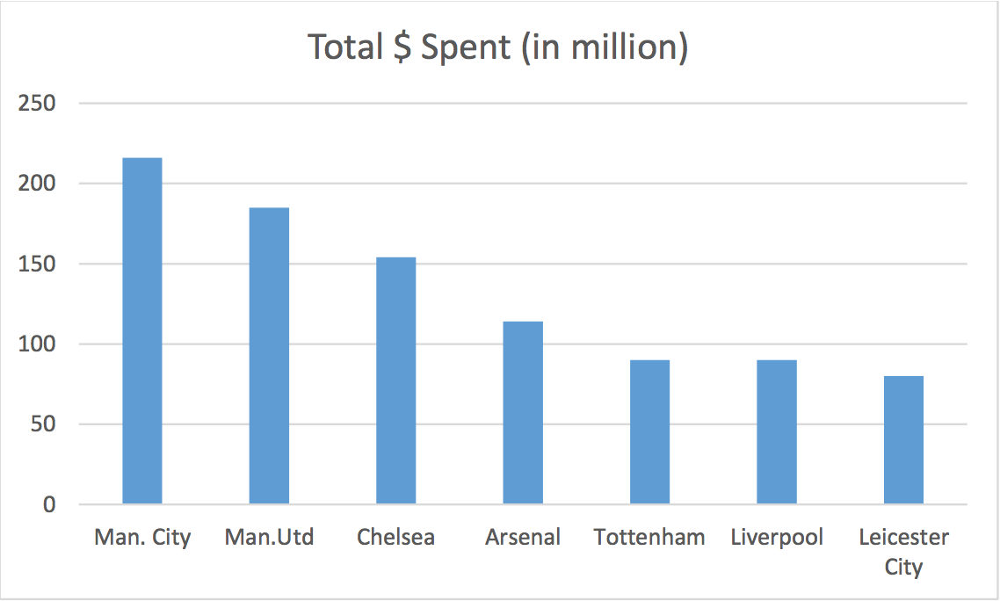
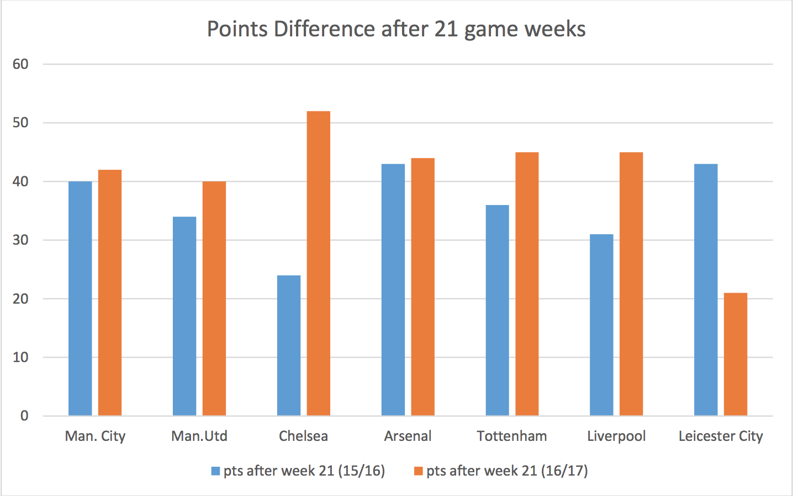

The Rise of the Six
By Kairav Sheth | March 18, 2017
Something happened last May that would’ve put the writers of Moneyball to shame. The Cleveland Cavaliers overturning a 3-1 deficit in the NBA finals seemed extremely insignificant to what had been achieved by a few soccer players across the Atlantic. Claudio “The Tinkerman” Ranieri did something everyone thought impossible. He led Leicester City to the league title against all odds; suddenly, a team that had fought a serious relegation battle a season ago, was lifting the coveted trophy. Where the hotshots of the league like Eden Hazard and Sergio Aguero flopped, lesser known names like Jamie Vardy, Riyadh Mahrez and N'Golo Kanté rose to occasion.
As captain Wes Morgan laid his giant paws on the premier league trophy, a shift in the balance of power was felt. The “Big 6” of English football, Manchester United, Chelsea, Arsenal, Liverpool, Manchester City and Tottenham Hotspur, could only watch as a team that cost less than $70 million to assemble beat odds greater than 5000/1 to lift this trophy. Just to put things in perspective, the squads of the next 3 teams in the league, i.e. Arsenal, Tottenham and City cost a mammoth total of over a billion dollars to assemble, with Manchester City’s Kevin De Bruyne costing the blues $70 million alone.
It was time to sit down and try to accept what had happened. That summer was going to be a busy one in terms of money being splashed around for transfers if parity was to be restored. A 10th place finish for the previous year’s champions Chelsea was more than a wakeup call. In a masterstroke of all sorts, they appointed Antonio Conte (seasonal winner at Juventus and fairly successful with the Italian National Team) as manager. They spent a total of over $150 million in transfers with their most significant signing being Leicester’s midfield maestro, N'Golo Kanté. Younger talents like Michy Batshuayi and Marcos Alonso along with a resigning of David Luiz completed their core transfer recruits.
While Manchester City were the highest spenders in the window, their most accomplished signing had to be the appointment of Pep Guardiola as manager, despite spending around $220 million on key players like John Stones and Ilkay Gundogan.
Manchester United appointed Jose “The Special One” Mourinho as the successor of Louis Van Gaal. Spending a whopping $185 million on transfers, the world saw Paul Pogba come back to Manchester United as the most expensive player. The highlight of United’s transfer window, however, was the signing of Zlatan Ibrahomvic. Arsenal, Tottenham and Liverpool too spent on key signings like Granit Xhaka, Moussa Sissokho and Sadio Mane respectively. Six months later, the effects of these massive investments can be clearly seen. Where Leicester still seems hungover from their exploits of the previous season, the top 6 clubs have significantly improved and have pulled away from the rest of the league. The so-called Big 6 have not only improved when it comes to average league position, but they have accumulated a lot more points this season as compared to this time last year.
Arsenal being the most consistent of the 7 teams shown to the right, we can see that 6 of them have improved vastly. Leicester are in a dogfight on the wrong end of the table and they seem to have lost the drive and thirst that led them to a very unlikely title a year ago. Many would say that equilibrium has been restored as the Top 6 in the table now reads Chelsea, Tottenham, Liverpool, Arsenal, Manchester City and Manchester United. But it is not just these ridiculous investments that have made this possible. Credit must go to these managers who are proving to be masters of the game time and again. The Top 6 are a good 9 points away from the next best team, Everton (the difference was only a point at this time last year) and it doesn’t seem unlikely that each of them could go on and win the league at this moment.
As it stands, each of the 6 teams could better their points tally from last season and put to rest the age long debate of whether money buys you success. 2 of the 6 teams will be gifted with Europa League spots (a consolation no team would be satisfied with) and 4 teams will enter the prestigious UEFA Champions League. A Europa League consolation would be unacceptable to any of the 6 teams but that is what you get when you have 6 great teams vying for the top 4 positions. Regardless of what happens, someone will be left in the dirt.
Edited by Derek Topper